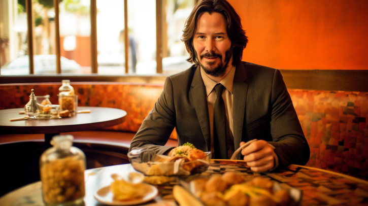
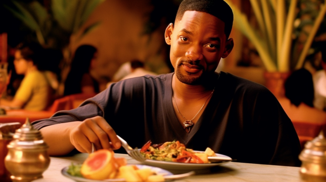
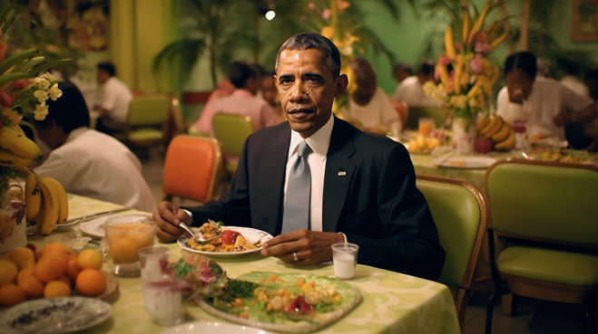

Uma experiência brasileira em todo lugar do mundo



Uma experiência brasileira em todo lugar do mundo
"A experiência no restaurante Dona Vó foi simplesmente incrível! A hospitalidade da equipe foi impecável, nos sentimos como parte da família."
-Keanu Reeves
"O conforto do restaurante Dona Vó é excepcional. Os assentos acolhedores e a decoração encantadora criam um ambiente relaxante e agradável para desfrutar de uma refeição."
-Emma Watson
"O ambiente no restaurante Dona Vó é encantador. Com sua decoração rústica e aconchegante, é o local perfeito para desfrutar de uma refeição tranquila e deliciosa."
-Ana Maria Braga
"O sabor dos pratos no restaurante Dona Vó é autêntico e verdadeiramente brasileiro. Cada mordida nos transporta para as delícias da cozinha caseira da vovó."
-Aquele crítico do Ratatouille
"A comida no restaurante Dona Vó é uma verdadeira obra-prima! Cada prato que experimentamos foi repleto de sabores autênticos e frescos, uma verdadeira festa para o paladar."
-Barack Obama
"A música ambiente no restaurante Dona Vó cria uma atmosfera envolvente e alegre. A seleção de músicas brasileiras nos transporta para um estado de espírito animado e descontraído."
-Anitta
"A equipe do restaurante Dona Vó é amigável e atenciosa, garantindo que cada cliente se sinta valorizado e bem cuidado durante toda a visita."
-Diogo Defante
"O restaurante Dona Vó oferece uma ótima relação custo-benefício. Desfrutar de refeições deliciosas e de alta qualidade a preços acessíveis é um verdadeiro achado."
-Gandalf, o Branco